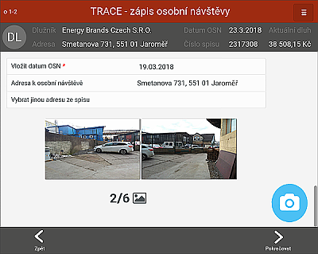
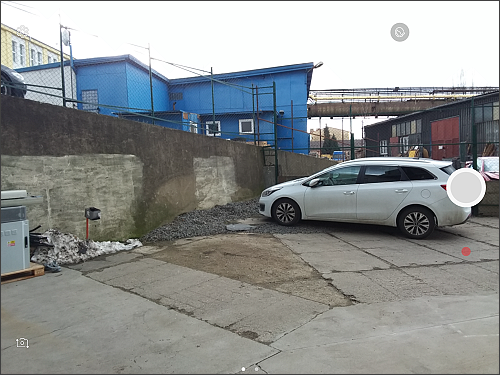
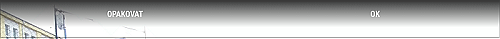

Vložení fotografií
První obrazovka je určená pro zajištění fotodokumentace z osobní návštěvy.

Po kliknutí na na modrou ikonu se spustí fotoaparát.

Po vyfocení snímku (kliknutí na kulaté tlačítko) je možnost snímek opakovat, nebo tlačítkem OK potvrdit správnost fotografie.

Na obrazovce jsou ikony fotoaparátu nahrazeny vyfocenými snímky. Ty lze ještě opakovat opětovným kliknutím na ně.